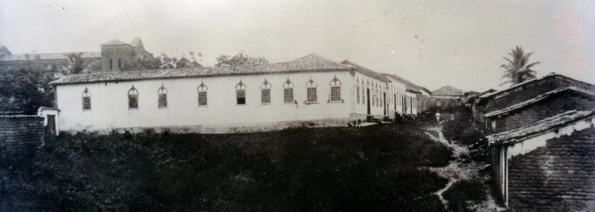

<style>
    section {
        display: flex;
        flex-direction: row;
        align-items: center;
        justify-content: center;
        gap: 40px;
        margin: 40px 0;
    }


    .conteudo {
        max-width: 1000px;
        font-family: Arial, sans-serif;
        font-size: 16px;
        line-height: 1.6;
        color: #333;
        text-align: justify;
    }

    .conteudo p {
        
        margin-bottom: 16px;
    }
    img {
        width: 600px;
        height: auto;
        border-radius: 8px;
    }
</style>
<section>

    <div class="conteudo">
        <p>As duas citações acima resumem a importância de Porto Nacional desde os seus primórdios até se transformar no mais importante polo cultural, político, econômico e social do então Norte Goiano, hoje Estado do Tocantins. Real, Imperial e Nacional. Muitos historiadores e pesquisadores já se debruçaram sobre sua história que não se esgota e segue nos dias atuais cada vez mais promissora. O Memorial oferece um pouco dessa história nas vozes de historiadores e pesquisadores da terra.</p>

        <p>Nos primeiros anos do século XIX (1806, portanto antes da chegada da Corte de D. João VI ao Rio de Janeiro), esse arraial torna-se cabeça de julgado, conforme Alencastre: “o arraial do Carmo, que até 1806 tinha sido cabeça de julgado, perdeu esta prerrogativa com a sua transferência para Porto Real, ponto este que com a navegação do Tocantins começava a prosperar, ao passo que o Carmo e o Pontal iam decaindo... (ALENCASTRE, 1979, p.284)</p>

        <p>No Tocantins as origens de Porto Nacional, vale apresentar ainda o ponto de vista de Maria de Fátima Oliveira, que afirma: “...Porto Nacional teve suas origens no século XVIII, por ser passagem obrigatória entre dois centros mineratórios, Monte do Carmo e Bom Jesus do Pontal” (OLIVEIRA, 2004, p.237)</p>

        <p>O crescente vai-e-vem de aventureiros, de um lado para o outro do rio, fez com que outros barqueiros aproveitassem a ideia do pioneiro lusitano e também passassem a comercializar a travessia. Dessa forma, ao aproximar-se o início do século XIX, inúmeros casebres começaram a desenhar um pequeno aglomerado humano, abrigando ali agricultores, pescadores, trabalhadores preparados para o transporte de cargas em direção aos dois arraiais, e mineradores... muito mineradores, na busca diuturna pelas reluzentes pepitas de ouro encontradas na região.</p>
    </div>
    <div class="imagem">
        
    </div>
    

</section>